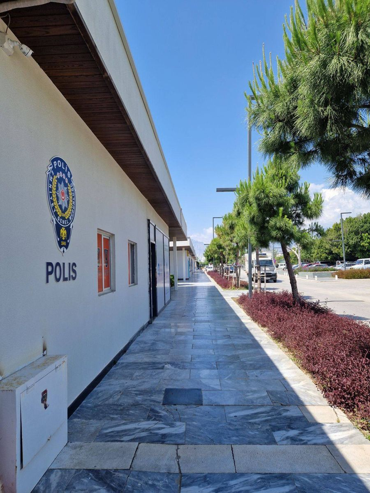

Kata tentara bayaran melonjak di pencarian Google Indonesia pada Kamis, 12 November 2026, sesudah Polda Metro Jaya membongkar sindikat yang merekrut WNI untuk dikirim menjadi tentara bayaran di Rusia. Sedikitnya 23 WNI sudah diberangkatkan lewat jaringan itu, enam orang ditetapkan sebagai tersangka, dan satu WNI dipastikan meninggal dunia. Artikel ini merangkum apa yang sudah terkonfirmasi, apa yang masih diselidiki, dan cara mengenali tawaran kerja luar negeri yang patut dicurigai, per November 2026.
Jawaban singkatnya begini. Kata tentara bayaran ramai dicari karena polisi membongkar jaringan perdagangan orang yang merekrut WNI untuk berperang di Rusia. Pengungkapan terbaru disampaikan Polda Metro Jaya pada Rabu, 11 November 2026. Polisi menyebut sedikitnya 23 WNI sudah diberangkatkan lewat jaringan ini, enam orang ditetapkan sebagai tersangka, dan satu WNI dipastikan meninggal dunia. Para korban dijanjikan kontrak sekitar Rp400 juta sampai Rp500 juta, gaji Rp40 juta sampai Rp50 juta per bulan, dan tunjangan anak sekitar Rp3 juta per bulan. Pekerjaan yang dijanjikan di awal adalah pengamanan perbatasan, tetapi yang terjadi di lapangan adalah penugasan sebagai prajurit infanteri di garis depan. Dua tersangka adalah warga negara asing dari Rusia dan Ukraina, empat lainnya WNI. Penyidikan masih berjalan, jadi angka dan peran tiap tersangka masih bisa berubah. Yang sudah pasti: tawaran gaji besar untuk kerja di zona perang adalah tanda bahaya, bukan peluang.
Apa yang sebenarnya terjadi?
Konferensi pers di Polda Metro Jaya pada Rabu, 11 November 2026, menjadi pemicu lonjakan pencarian. Kapolres Metro Jakarta Barat, Kombes Pol Nasriadi, menyampaikan bahwa jaringan ini sudah memberangkatkan sedikitnya 23 WNI ke Rusia. Dari jumlah itu, satu orang dipastikan meninggal dunia dan beberapa lainnya mengalami luka berat setelah terkena ranjau atau tembakan. Polisi menangani perkara ini sebagai tindak pidana perdagangan orang atau TPPO jaringan internasional, bukan sekadar penipuan lowongan kerja biasa. Enam orang ditetapkan sebagai tersangka. Dua di antaranya warga negara asing, satu dari Rusia dan satu dari Ukraina, sedangkan empat lainnya WNI. Jaringan ini mencari korban di Jakarta, Medan, Pemalang, Banyumas, dan Bali. Modus yang dipakai terbilang sederhana: tawarkan pekerjaan di luar negeri dengan bayaran yang jauh di atas gaji biasa, lalu ubah isi pekerjaannya sesudah korban berangkat. Korban dijanjikan menjadi personel pengamanan perbatasan. Menurut polisi, calon tanpa pengalaman militer dijanjikan latihan fisik selama enam bulan di zona perbatasan Rusia dan Ukraina, lalu diterjunkan sebagai prajurit infanteri di garis depan pertempuran.

Kenapa dua warga Rusia dan Ukraina bisa bekerja sama?
Ini bagian yang paling banyak ditanyakan. Rusia dan Ukraina sedang berperang, tetapi dua tersangka warga negara asing dalam perkara ini justru bekerja sama merekrut WNI di Indonesia. Nasriadi menyampaikan hal itu secara langsung dalam konferensi pers. Katanya, di negara mereka kedua orang itu saling berperang, tetapi di Indonesia mereka berkolaborasi mencari WNI untuk direkrut menjadi tentara bayaran. Fakta ini penting karena menunjukkan bahwa jaringan perekrutan tidak peduli pada kubu perang. Yang mereka kejar adalah korban yang bisa dikirim ke garis depan. Jadi jangan heran bila perekrut dari negara yang bertikai bisa berada dalam satu jaringan yang sama. Motifnya uang, bukan keberpihakan pada salah satu pihak yang berperang.
Jangan sampai tertukar: ada dua pengungkapan berbeda
Angka yang beredar di media sosial mudah tertukar karena ada dua pengungkapan berbeda. Pengungkapan pertama disampaikan Bareskrim Polri pada Senin, 2 November 2026. Dalam perkara itu polisi menetapkan 13 tersangka dan mengidentifikasi 58 korban dari lima laporan polisi, dengan iming-iming bonus sekitar Rp620 juta dan gaji sekitar Rp50 juta per bulan. Pengungkapan kedua disampaikan Polda Metro Jaya pada Rabu, 11 November 2026. Inilah perkara dengan 23 WNI dan enam tersangka yang membuat kata tentara bayaran melonjak di pencarian pada 12 November 2026. Keduanya sama-sama soal perekrutan WNI menjadi tentara bayaran di Rusia, tetapi jumlah korban, jumlah tersangka, dan penyidiknya berbeda. Bila kamu membaca angka 58 dan angka 23 dalam satu hari, kemungkinan besar keduanya benar, hanya saja berasal dari perkara yang berbeda. Per November 2026, penyidikan kedua perkara masih berjalan.
Bagaimana cara mengenali tawaran kerja luar negeri yang mencurigakan?
Polanya hampir selalu sama, jadi kamu bisa mengenalinya sebelum terlambat. Pertama, gaji yang ditawarkan jauh di atas pekerjaan sejenis dan dibungkus janji bonus ratusan juta. Menteri Pelindungan Pekerja Migran Indonesia, Mukhtarudin, sudah mengingatkan agar masyarakat tidak mudah tergiur tawaran seperti ini dan memastikan dulu jenis pekerjaan, legalitas perekrut, serta prosedur penempatannya. Kedua, lowongan datang dari iklan media sosial atau grup chat, bukan dari kanal resmi. Ketiga, perekrut meminta kamu menyamar sebagai wisatawan saat diperiksa di bandara atau menandatangani kontrak berbahasa asing yang tidak kamu pahami. Kasus calon pekerja asal Tulungagung pada akhir Oktober 2026 menunjukkan pola ini: ia melihat iklan di Instagram, dijanjikan gaji Rp40 juta per bulan dan bonus Rp400 juta, lalu diminta menyamar sebagai wisatawan. Keberangkatannya berhasil digagalkan petugas di Bandara Soekarno-Hatta pada 30 Oktober 2026. Sebelum menerima tawaran kerja ke luar negeri, cek lowongan itu di SISKOP2MI dan Karirhub Kemnaker, dan pastikan perusahaan penyalurnya terdaftar sebagai P3MI. Bila namanya tidak ada di sistem resmi, anggap tawaran itu bermasalah sampai terbukti sebaliknya.
Yang masih kabar: peran tiap tersangka dan nasib para WNI yang sudah berangkat, termasuk WNI berinisial AS yang ditangkap otoritas Ukraina dan kini diurus KBRI di Kyiv. Kemlu sudah membenarkan penangkapan itu, tetapi belum ada informasi yang memastikan kaitan AS dengan jaringan 23 orang ini. Ikuti kabar lanjutannya dari sumber resmi, dan sebarkan peringatan ini ke orang di sekitarmu yang sedang mencari kerja ke luar negeri.
Baca juga: Kenapa Gibran Trending yang memakai pola yang sama, yaitu memisahkan fakta terkonfirmasi dari kabar, dan Cara Transfer Uang ke Luar Negeri Pakai GoPay untuk urusan uang lintas negara yang aman. Kamu juga bisa melihat kumpulan artikel Other dan artikel riset lain di blog.
Sumber dan Info Resmi
Fakta dan langkah di artikel ini merujuk ke sumber berikut:
- Rival: kata tentara bayaran melonjak di Google Trends Indonesia pada 12 November 2026; sedikitnya 23 WNI diberangkatkan; enam tersangka; konferensi pers 11 November 2026; kontrak sekitar Rp400 juta sampai Rp500 juta, gaji Rp40 juta sampai Rp50 juta per bulan, tunjangan anak sekitar Rp3 juta per bulan; calon tanpa pengalaman militer dijanjikan latihan enam bulan lalu diterjunkan sebagai infanteri garis depan; satu WNI meninggal, beberapa luka berat kena ranjau atau tembakan.
- CNA Indonesia: enam tersangka terdiri dari dua WNA Rusia dan Ukraina serta empat WNI; pernyataan Kapolres Metro Jakarta Barat Kombes Pol Nasriadi pada 11 November 2026; Kemlu membenarkan WNI berinisial AS ditangkap otoritas Ukraina dan KBRI di Kyiv meminta akses kekonsuleran; belum ada informasi yang memastikan kaitan AS dengan jaringan 23 orang ini.
- Espos: kutipan Nasriadi soal dua WNA yang di negaranya saling berperang tetapi di Indonesia berkolaborasi merekrut WNI; wilayah perekrutan Jakarta, Medan, Pemalang, Banyumas, hingga Bali.
- Seantero News: pengungkapan Bareskrim Polri 2 November 2026 yang berbeda, dengan 13 tersangka, 58 korban, lima laporan polisi, iming-iming bonus sekitar Rp620 juta dan gaji sekitar Rp50 juta per bulan.
- RCTI+: peringatan Menteri P2MI Mukhtarudin agar masyarakat tidak tergiur gaji besar dan memastikan jenis pekerjaan, legalitas perekrut, serta prosedur penempatan.
- Kabar Tulungagung: calon pekerja asal Tulungagung melihat iklan Instagram, dijanjikan gaji Rp40 juta per bulan dan bonus Rp400 juta, diminta menyamar sebagai wisatawan, keberangkatan digagalkan petugas P4MI di Bandara Soekarno-Hatta pada 30 Oktober 2026.
- Peduli WNI: jalur resmi kerja luar negeri lewat Karirhub Kemnaker dan SISKOP2MI, penempatan tercatat resmi oleh negara.
- WorkAbroad: cara cek lowongan lewat SISKOP2MI dan memastikan perusahaan penyalur terdaftar sebagai P3MI.